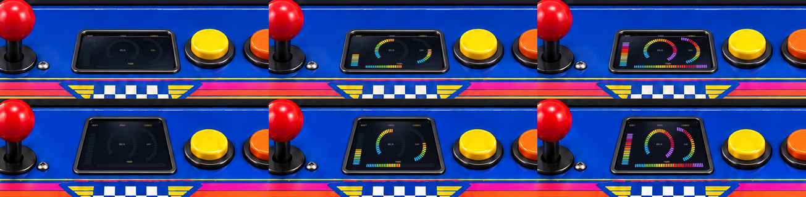
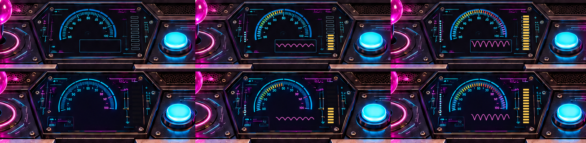
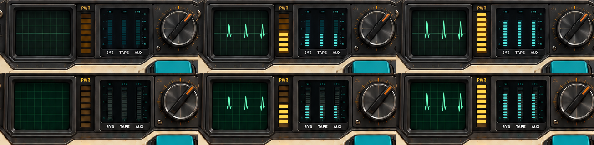
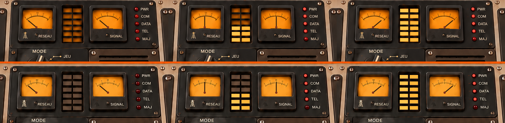
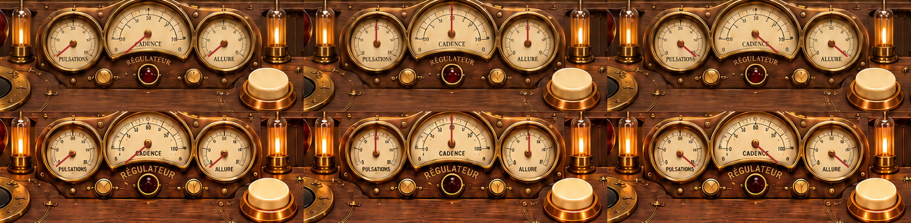

Colonnes : zéro, moitié et maximum. Ligne supérieure : borne entière. Ligne inférieure : mode jeu.
Ces planches servent à examiner les cadrans et leur placement, à partir des mêmes dessins que dans le studio.





Rendus de contrôle des instruments superposés aux artworks. Mesures simulées.